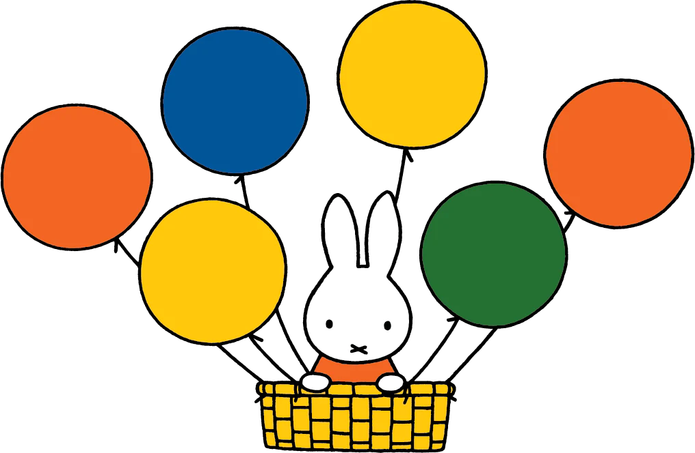

Over nijntje
In 1955 tekent Dick Bruna nijntje voor het eerst. In 2011 verschijnt het laatste nieuwe boek met nijntje in de hoofdrol.
Dick Bruna wordt ook wel 'de vader van nijntje' genoemd, maar sinds hij 80 jaar is geworden (in 2007) noemt hij zichzelf liever 'de opa van nijntje'.
inhoudsopgave
Geschiedenis
In 1955 wordt nijntje 'geboren'. Tijdens een vakantie in Egmond aan Zee, vertelt Dick Bruna elke avond voor het slapengaan aan zijn oudste zoon Sierk een verhaaltje over een wit konijn dat in de tuin van het vakantiehuisje rondloopt. Dat konijn wordt de inspiratie voor nijntje. Als vader Dick wat zit te tekenen verschijnt nijntje op papier. Omdat hij het leuker vindt om een jurkje te tekenen dan een broekje, maakt hij van nijntje een meisje. In de eerste jaren lijkt nijn op een stoffen speelgoeddier, met wat lompe oren. Vanaf 1963, als de boekjes voortaan in vierkant formaat verschijnen, lijkt ze op de nijn zoals wij haar nu nog kennen. Ze kijkt met haar zwarte oogjes de lezer eigenwijs aan, heeft twee strakke, puntige oren en lekkere bolle wangen. Vanaf het boek 'nijntjes droom' (1979) worden haar oren en gezicht wat ronder en komen meer in balans. Behalve dat haar lijf ook wat ronder en molliger wordt, zoals bijvoorbeeld in 'nijntje in de tent' (1995) verandert er deze jaren niet veel. Pas in 2001 wordt de verhouding tussen haar hoofd en lijf iets anders in 'het spook nijntje' en ziet ze er wat meer uit als peuter. Sinds de komst van een baby in 'kleine pluis' (2003) is nijn als grote zus een echt kleuterkonijn.
Populair
Nijntje is wereldwijd het meest bekend en het meest populair van de figuren uit de boeken van Dick Bruna. Hij heeft over haar ook de meeste boeken gemaakt (meer dan 30). Ze spreekt kinderen over de hele wereld aan en geeft ze een warm en prettig gevoel van veiligheid. Veel kinderen herkennen zich in nijntje en in haar avonturen. Ze is ongecompliceerd en onschuldig, is positief en staat open voor nieuwe ervaringen.
Een quote van de website
"Volgens de Japanse en Chinese dierenriem is Dick Bruna geboren in het jaar van het konijn."
Naam nijntje
De naam 'nijntje' is afgeleid van konijntje. Voor iedereen die Nederlands spreekt, is dat een heel logische naam, maar in het buitenland is dat anders. Omdat het woord 'konijn' in alle talen anders is en 'nijntje' bovendien heel moeilijk is om uit te spreken in veel andere landen, heeft onze nijn in het buitenland een andere naam gekregen. Eentje die geen speciale betekenis heeft, maar wel makkelijk uit te spreken is in alle talen: miffy. Vroeger had nijntje in elk land een andere naam ('le petit lapin' in Frankrijk en 'kleintjie' in Zuid-Afrika bijvoorbeeld) maar sinds 1996 heet ze overal buiten Nederland 'miffy'.
